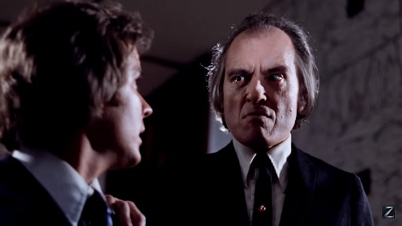

No matter how much we love horror movies, we all have that one "classic" movie that seems like everyone has seen, except you. For some reason or another, we just never got around to see it. Some of those movies are actual good movies, and some just hold a special place in our heart because of nostalgia. This is what this page is for. My self and the Spooky Crew are going to choose movies that we should've watched years ago and discuss what it's like to watch it for the first time years after it initially released
Won’t lie, I’ve always loved Bela Lugosi. That accent and those intense eyes. I have never never seen White Zombie, or if I did, it was as a wee lass. I decided to give this 1932 horror classic a watch.
The quality wasn’t the best, but I loved the snaps and pops of the sound. Luckily, the quality got better.
Lugosi approaches a young couple as they are traveling through Hates. The carriage driver, upon seeing Legosi’s zombies, flees. The couple have arrived to get married at an acquaintance’s estate. Little do they know what fate awaits them. Muaaaauahaha (evil laugh).
The estate owner declares his undying love for the young lady, but she is true to her love. He turns to Legosi to make the new bride his. What follows is a story of loss, voodoo, and despair. It’s a tale as old as time - man loves woman, woman turns into zombie, man tries to free her.
Lugosi was always over the top with his acting, but I always loved it. The film, despite the poor quality, was still beautiful to watch. I also enjoyed this spin on the zombie genre. The only thing I didn’t enjoy was the screeching vulture. I had to turn the volume down.
At only 67 minutes it was worth the watch. Makes me want to watch Lugosi’s Dracula. I’m glad Shudder is adding the classics!
We’ve all heard the saying “You can’t go back home again”. When it comes to a truly good horror film is this true? I’m sure we all have those movies we saw when we were younger that truly disturbed us. When I think of it, there are several that I can say really scared me and I’ve never watched them again because of it. Movies like Jaws and The Exorcist, while both extremely scary and mentally scarring, I’ve watched many many times. I have decided to go home and watch those gems I was either too scared to watch again, or really enjoyed, but have not watched since watching them the first time.
The first movie I decided to revisit was Don Coscarelli’s Phantasm. Starring Angus Scrimm as The Tall Man, which I saw upon its release in 1979 at the tender age of 8, this movie made a long lasting impression. Watching it recently, I don’t understand why. Could it have been the small robed demon like creatures running around the cemetery? The floating killing sphere? Once the scene happened, I instantly remembered. The finger. That whole scene is what terrified me as a child. Even as an adult it made me cringe. Of course the aftermath was hilarious. Ok, ok, I’ll stop. I won’t spoil it for you. It actually made me a little queasy. Love it!
To me the story has held up quite well 40 years later. The acting? Not so much. Angus was very imposing as The Tall Man and Reggie Bannister as the best friend were my two favorite characters. The other actors were typical 70/80s fare. I watched the recently remastered release headed up by J.J. Abrams and his Bad Robot production company, and it was absolutely gorgeous.
I really enjoyed Phantasm this time around and look forward to visiting some other childhood nightmares…errr, treasures.
© Copyright 2016 Universal Studios
Alice, Sweet Alice is a 1976 slasher directed by Alfred Sole. In 1961, a divorced catholic couple's life is turned upside down when one of their two adolescent daughters is suspected of her younger sister's brutal murder during her First Communion, and a series of subsequent stabbings.
Waxwork Records has announched that they spent six years working on obtaining the score to this film. So I figured there's no better time than the present to check this film out for the first time.
Be sure to check back soon for my review as I watch Alice, Sweet Alice for the first time!